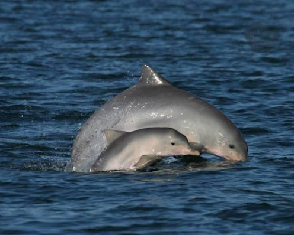
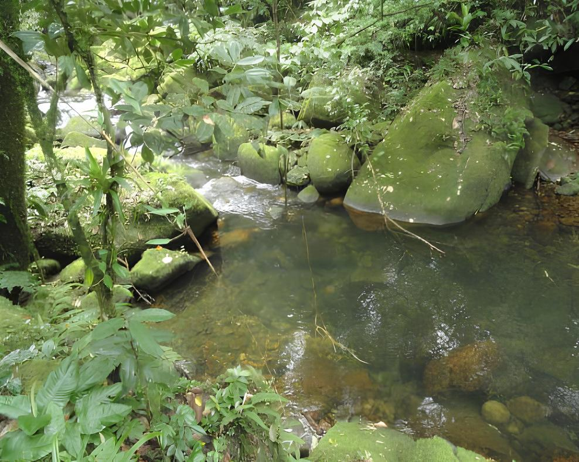
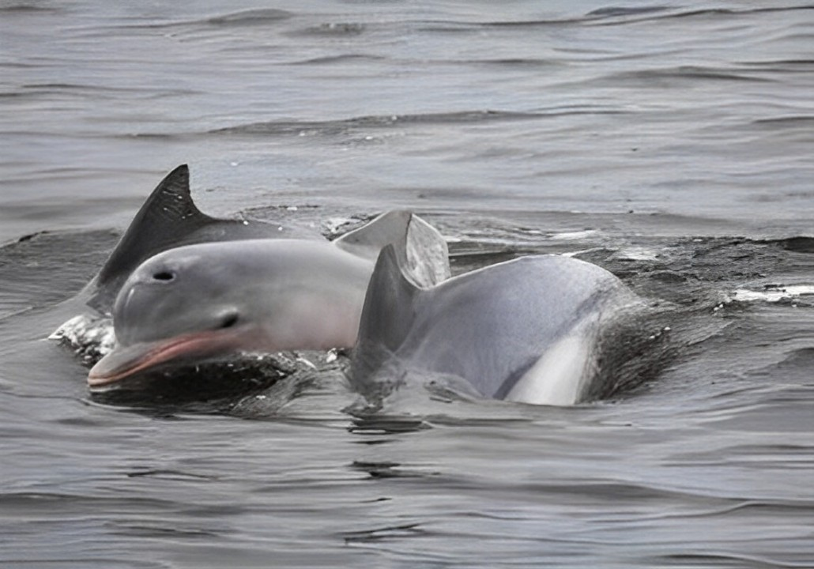

A Ilha do Cardoso, onde está situado o Parque Estadual da Ilha do Cardoso, encontra-se no litoral sul do estado de São Paulo, no município de Cananéia. Abrangendo uma área de aproximadamente 13,6 mil hectares, a ilha destaca-se pelo seu elevado nível de conservação, com mais de 90% de suas florestas preservadas. Essa conservação permite a coexistência de diversos tipos de vegetação da Mata Atlântica, criando um refúgio para centenas de espécies de animais e plantas. Além disso, o parque oferece trilhas ecológicas, cachoeiras e praias deslumbrantes, proporcionando uma experiência única de contato com a natureza.
Fauna Local

A Ilha do Cardoso é um santuário natural que abriga uma impressionante e diversificada fauna. Localizada no litoral sul de São Paulo, essa ilha é parte do Parque Estadual da Ilha do Cardoso, protegendo uma rica biodiversidade.
No caminho para a ilha, botos-cinza (Sotalia guianensis) frequentemente acompanham as embarcações, realizando piruetas e manobras que encantam os visitantes. Nas trilhas, é possível encontrar animais como o tamanduá-mirim (Tamandua tetradactyla), o ameaçado mico-leão-da-cara-preta (Leontopithecus caissara) e as jaguatiricas (Leopardus pardalis).
A avifauna da ilha é igualmente notável. As florestas abrigam o vibrante papagaio-de-cara-roxa (Amazona brasiliensis), as arapongas (Procnias nudicollis) com seu canto potente e a rara jacutinga (Aburria jacutinga).
Flora Local
A flora é um verdadeiro paraíso botânico, abrigando uma grande diversidade de espécies, refletindo a grande proporção da Mata Atlântica.
Podemos encontrar os seguintes ecossistemas na Ilha:
Manguezais: Os manguezais da Ilha do Cardoso são o berço de vida de diversos animais e desempenham um papel crucial na proteção da vida marinha e da costa. Na ilha, existem três tipos principais de manguezais: o mangue-vermelho, o mangue-branco e o mangue-preto. Esses ecossistemas não apenas abrigam uma grande variedade de espécies, mas também servem como importantes áreas de alimentação e reprodução para muitas formas de vida marinha e terrestre.
Praias e Dunas: É neste ecossistema que podemos encontrar plantas resistentes ao vento e à salinidade, como aroeiras e Capins-da-praia, que ajudam a prevenir o solo de erosões, deixando-o mais estável.
Florestas de Encosta: Compostas por árvores de grande porte, como cedros e figueiras, que formam um dossel fechado, sendo o lar de plantas epífitas, como bromélias e orquídeas.
Áreas Alagadas e Brejos: Área caracterizada pela vegetação aquática, como Taboas e aguapés, sendo de grande importância para a manutenção da biodiversidade local, pois funcionam como refúgio para diversas espécies, controlam inundações e filtram a água, removendo sedimentos e impurezas.

Passeios
Passeios disponíveis
Passeio pelo Museu Ilha do Cardoso

Passeio pela Baía dos Golfinhos
Extensão: 16,5km | Duração: 3h
Pedal do Pereirinha até o Marco do Itacuruçá
Extensão: 13km | Duração: 2h
Praia do Pereirinha
Extensão: 6,5km
Informações Adicionais
Para visitar a Ilha do Cardoso, é necessário realizar uma viagem de barco, com duração de aproximadamente 50 minutos, que proporciona a observação de lindas paisagens litorâneas. Os barcos partem regularmente do porto de Cananeia, mas, principalmente em épocas mais movimentadas, é altamente recomendado verificar os horários e fazer sua reserva com antecedência.